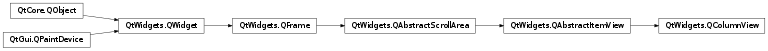

QColumnView¶
Synopsis¶
Functions¶
- def
columnWidths() - def
initializeColumn(column) - def
previewWidget() - def
resizeGripsVisible() - def
setColumnWidths(list) - def
setPreviewWidget(widget) - def
setResizeGripsVisible(visible)
Virtual functions¶
- def
createColumn(rootIndex)
Signals¶
- def
updatePreviewWidget(index)
Detailed Description¶
The
PySide2.QtWidgets.QColumnViewclass provides a model/view implementation of a column view.
PySide2.QtWidgets.QColumnViewdisplays a model in a number of QListViews, one for each hierarchy in the tree. This is sometimes referred to as a cascading list.The
PySide2.QtWidgets.QColumnViewclass is one of the Model/View Classes and is part of Qt’s model/view framework .
PySide2.QtWidgets.QColumnViewimplements the interfaces defined by thePySide2.QtWidgets.QAbstractItemViewclass to allow it to display data provided by models derived from thePySide2.QtCore.QAbstractItemModelclass.
See also
-
class
PySide2.QtWidgets.QColumnView([parent=nullptr])¶ Parameters: parent – PySide2.QtWidgets.QWidgetConstructs a column view with a
parentto represent a model’s data. UsePySide2.QtWidgets.QColumnView.setModel()to set the model.See also
-
PySide2.QtWidgets.QColumnView.columnWidths()¶ Return type: Returns a list of the width of all the columns in this view.
-
PySide2.QtWidgets.QColumnView.createColumn(rootIndex)¶ Parameters: rootIndex – PySide2.QtCore.QModelIndexReturn type: PySide2.QtWidgets.QAbstractItemViewTo use a custom widget for the final column when you select an item overload this function and return a widget.
indexis the root index that will be assigned to the view.Return the new view.
PySide2.QtWidgets.QColumnViewwill automatically take ownership of the widget.
-
PySide2.QtWidgets.QColumnView.initializeColumn(column)¶ Parameters: column – PySide2.QtWidgets.QAbstractItemViewCopies the behavior and options of the column view and applies them to the
columnsuch as thePySide2.QtWidgets.QAbstractItemView.iconSize(),PySide2.QtWidgets.QAbstractItemView.textElideMode()andPySide2.QtWidgets.QAbstractItemView.alternatingRowColors(). This can be useful when reimplementingPySide2.QtWidgets.QColumnView.createColumn().
-
PySide2.QtWidgets.QColumnView.previewWidget()¶ Return type: PySide2.QtWidgets.QWidgetReturns the preview widget, or 0 if there is none.
-
PySide2.QtWidgets.QColumnView.resizeGripsVisible()¶ Return type: PySide2.QtCore.bool
-
PySide2.QtWidgets.QColumnView.setColumnWidths(list)¶ Parameters: list – Sets the column widths to the values given in the
list. Extra values in the list are kept and used when the columns are created.If list contains too few values, only width of the rest of the columns will not be modified.
-
PySide2.QtWidgets.QColumnView.setPreviewWidget(widget)¶ Parameters: widget – PySide2.QtWidgets.QWidgetSets the preview
widget.The
widgetbecomes a child of the column view, and will be destroyed when the column area is deleted or when a new widget is set.
-
PySide2.QtWidgets.QColumnView.setResizeGripsVisible(visible)¶ Parameters: visible – PySide2.QtCore.bool
-
PySide2.QtWidgets.QColumnView.updatePreviewWidget(index)¶ Parameters: index – PySide2.QtCore.QModelIndex
© 2018 The Qt Company Ltd. Documentation contributions included herein are the copyrights of their respective owners. The documentation provided herein is licensed under the terms of the GNU Free Documentation License version 1.3 as published by the Free Software Foundation. Qt and respective logos are trademarks of The Qt Company Ltd. in Finland and/or other countries worldwide. All other trademarks are property of their respective owners.